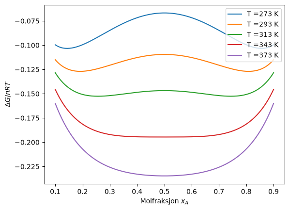
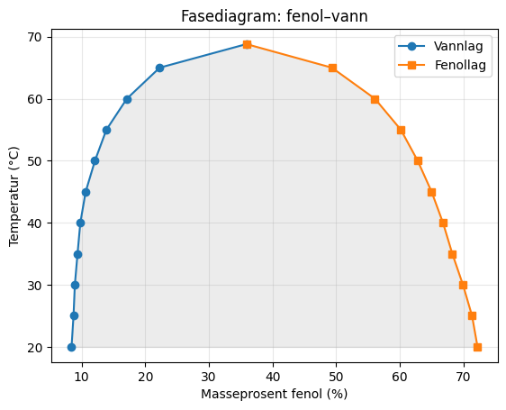

Uke 9 – Løsninger og blandinger 2#
Oppgave 1: Fortsettelse Gibbs fri energi for ikke-ideele blandinger#
a) Begynn med å gjøre ferdig Diskusjonsoppgave 3 fra forrige uke
b) Som vi kom fram til i forrige uke (diskusjonsoppgave 3) er den frie energien for blandingen av to væsker bestående av A og B molekyler er gitt som
der \(x_A\) er molfraksjonen av komponent A, \(x_B=(1-x_A)\) er molfraksjonen av komponent B, mens \(\xi_{AB}\) er gitt ved:
og betegner forholdet mellom de forskellige intermolekylære interaksjonene i blandingen. Denne er avhengig av temperaturen, og absoluttverdien til \(\xi\) avtar med økende temperatur.
Plot \(\Delta G\) som en funksjon av molbrøken \(x_A\) for forskjellige temperaturer i området \(0-100^{\circ}C\), inkluder både \(0^{\circ}C\), \(100^{\circ}C\) og flere verdier i mellom. Du kan sette \(\xi_{AB}=684/T\) der \(T\) har enheten Kelvin.
Svar Her er en kode som lar deg plotte \(\Delta G\):
import numpy as np
import matplotlib.pyplot as plt
x = np.linspace(0.1, 0.9, 200)
for T in [273, 293, 313, 343, 373]:
gamma = 684 / T
dG = x*np.log(x) + (1-x)*np.log(1-x) + gamma*x*(1-x)
plt.plot(x, dG, label=f'T ={T} K')
plt.xlabel(r'Molfraksjon $x_A$')
plt.ylabel(r'$\Delta G/nRT$')
plt.legend()
plt.show()

c) Hva er den fysiske tolkningen av det er to minima for \(\Delta G\) under en viss temperatur, og bare ett minimum ved høyere temperaturer, og hva har dette å si for blandingen?
Svar Når vi har to minima for \(\Delta G\) betyr det at to forskjellige sammensettninger av A og B gir et minimum i den frie energien. Vi får dermed faseseparasjon av blandingen til to faser med ulik komposisjon. Dette er drevet av de intermolekylære interaksjonene på “bekostning” av entropien. Ved høyere temperatur dominerer entropileddet og vi får en minimum i \(x_A=x_B\) som vi så i forrige uke gir høyest entropi.
Oppgave 2#
a) Løsemiddelet i en ideell løsning følger Raoults lov \(p_{A}=x_{A}p_{A}^{\ast }\), videre blir \(x_{A}=\frac{p_{A}}{p_{A}^{\ast }}\), og det kjemiske potensialet er gitt ved \({\mu }_{A}={\mu }_{A}^{\ast }+RT\ln{x_{A}}\). For alle løsninger, også de som ikke følger Raoults lov, kan vi skrive \(a_{A}=p_{A}/p_{A}^{\ast }\), hvor a er aktiviteten. Basert på dette, hva er aktiviteten? Og hvordan kan man utrykke det kjemiske potensialet med denne? Hva skjer med aktiviteten om løsningen er ideell?
Svar Aktiviteten er definert som \(a_A = p_A/p_A^*\), altså det faktiske damptrykket delt på damptrykket til den rene væsken. Det kjemiske potensialet uttrykkes da som \(\mu_A = \mu_A^* + RT \ln a_A\). For en ideell løsning er \(a_A = x_A\), siden Raoults lov da gjelder eksakt.
b) Når går aktiviteten mot å være det samme som molfraksjonen av løsningsmiddelet?
Svar Aktiviteten nærmer seg molfraksjonen når konsentrasjonen av løsningsmiddelet er høy (\(x_A \rightarrow 1\)), altså i det fortynnede løsningsstoff-grensen der løsningsmiddelet oppfører seg tilnærmet ideelt, dette er Raoults-lov-grensen.
c) Aktivtetskoeffisienten γ er gitt ved \(a_{A}={\gamma }_{A}x_{A}\). Hva ligger det i denne parameteren?
Svar \(γ_A\) i \(a_A = γ_A x_A\) representerer avviket fra ideell oppførsel:
\(γ = 1\) betyr ideell oppførsel.
\(γ > 1\) betyr positivt avvik: molekylene “flykter” lettere til damp enn ideelt forventet, ofte pga. svakere A–B enn A–A/B–B-interaksjoner.
\(γ < 1\) betyr negativt avvik: sterkere A–B-interaksjoner, f.eks. hydrogenbindinger, holder molekylene sterkere i løsning.
d) Hvorfor har man introdusert begrepet med aktivitet? Hvorfor brukes ikke bare molaritet/molalitet?
Svar Molaritet/molalitet beskriver kun den nominelle konsentrasjonen, men i ikke-ideelle løsninger er det den “effektive” konsentrasjonen som styrer termodynamikken, ikke den nominelle, pga. interaksjoner mellom partiklene. Aktivitet korrigerer for dette avviket, slik at de termodynamiske likningene forblir eksakte selv i ikke-ideelle systemer.
e) Hvorfor bruker man «gjennomsnittlige aktivtetskoeffisienten» for ioner?
Svar Man kan ikke måle aktivitetskoeffisienten til en ionetype alene fordi man ikke kan ha en løsning med bare kationer eller bare anioner, elektronøytralitet krever begge. Derfor definerer man en gjennomsnittlig aktivitetskoeffisient \(γ±\) som kombinerer bidragene fra begge ionetypene, og som er den eksperimentelt målbare/meningsfulle størrelsen.
Oppgave 3#
a) Kolligative egenskaper er intensive egenskaper som kun avhenger av andelen løst stoff per løsemiddel, ikke hva slags løsning det er. Egenskapene omfatter frysepunkt, kokepunkt, damptrykk og osmotisk trykk. Hvordan foregår slike endringer?
Svar Disse egenskapene endres fordi tilstedeværelsen av oppløst stoff senker det kjemiske potensialet til løsningsmiddelet, uavhengig av hva slags stoff det er, kun avhengig av antall partikler oppløst. Dette skjer fordi det oppløste stoffet “fortynner” løsningsmiddelet og øker løsningens entropi i flytende fase, noe som forskyver likevekten mellom faser.
b) Hvordan tror dere at de forskjellige egenskapene endres når mengde løst stoff endres? Blir de lavere eller høyere når andelen økes, og hvordan kan dere forklare dette? - Damptrykk - Kokepunkt - Frysepunkt
Svar
Damptrykk: senkes når mengde løst stoff øker, løsningsmiddelets kjemiske potensial/aktivitet reduseres.
Kokepunkt: heves. Siden damptrykket er lavere ved en gitt temperatur, må temperaturen økes mer for å nå damptrykk lik atmosfæretrykket.
Frysepunkt: senkes. Det oppløste stoffet stabiliserer flytende fase relativt til fast fase, slik at lavere temperatur kreves for å nå likevekt mellom fast og flytende fase.
Osmotisk trykk: økes. En økt konsentrasjon av løste partikler vil gi en sterkere drivkraft for vannmolekylene til å krysse den semipermeable membranen for å jevne ut det kjemiske potensialet.
Oppgave 4#
a) Hva er fraksjonert destillering?
Svar Fraksjonert destillering: En separasjonsteknikk der en væskeblanding gjentatte ganger fordampes og kondenseres via en kolonne med mange “trinn” for å utnytte at damp over en blanding er beriket på den mer flyktige komponenten, slik at komponentene gradvis separeres etter kokepunkt.
b) Hva er en azeotrop?
Svar Azeotrop: Et sammensetningspunkt der væske- og dampfase har nøyaktig samme sammensetning, slik at videre destillering ikke kan separere komponentene ytterligere ved det punktet.
c) Hva er critical solution temperature?
Svar Critical solution temperature: Temperaturen der to delvis blandbare væsker akkurat blir fullstendig blandbare i alle proporsjoner. Over denne temperaturen forsvinner miscibility-gapet/fasesepareringen.
d) Hva skjer ved fase-separasjon?
Svar Faseseparasjon: Skjer når den frie blandingsenergien har to eller flere minima som funksjon av sammensetning i stedet for ett: systemet senker sin totale frie energi ved å dele seg i to faser med ulik sammensetning, hver ved sitt lokale minimum, i stedet for å forbli som én homogen blanding.
e) Hva kommer osmotisk trykk fra?
Svar Osmotisk trykk oppstår fordi løsningsmiddelets kjemiske potensial er lavere på siden med oppløst stoff (pga. fortynningseffekten/entropien) enn på den rene løsningsmiddelsiden. For å gjenopprette likevekt gjennom en semipermeabel membran, må trykket økes på løsningssiden for å heve det kjemiske potensialet der tilbake til likevekt med den rene siden.
Regneoppgaver#
Oppgave 1#
Bruk følgende data for å lage et fasediagram med Python/matplotlib for systemet fenol – vann og svar på spørsmålene nedenfor (sammensetningen er gitt i masse-prosent fenol):
t/°C |
20 |
25 |
30 |
35 |
40 |
45 |
50 |
55 |
60 |
65 |
68,8 |
|---|---|---|---|---|---|---|---|---|---|---|---|
vannlag |
8,40 |
8,71 |
8,92 |
9,34 |
9,78 |
10,62 |
12,08 |
13,88 |
17,10 |
22,26 |
35,90 |
fenollag |
72,24 |
71,38 |
69,95 |
68,28 |
66,81 |
65,02 |
62,83 |
60,18 |
56,10 |
49,34 |
35,90 |
a) Angi sammensetningene på de to lagene som dannes ved \(30^{\circ}C\) fra en løsning av \(30\) g fenol og \(70\) g vann.
import matplotlib.pyplot as plt
t = [20, 25, 30, 35, 40, 45, 50, 55, 60, 65, 68.8]
vann = [8.40, 8.71, 8.92, 9.34, 9.78, 10.62, 12.08, 13.88, 17.10, 22.26, 35.9]
fenol = [72.24, 71.38, 69.95, 68.28, 66.81, 65.02, 62.83, 60.18, 56.10, 49.34, 35.9]
plt.plot(vann, t, 'o-', label='Vannlag')
plt.plot(fenol, t, 's-', label='Fenollag')
plt.fill_betweenx(t, vann, fenol, alpha=0.15, color='gray')
plt.xlabel('Masseprosent fenol (%)')
plt.ylabel('Temperatur (°C)')
plt.title('Fasediagram: fenol–vann')
plt.legend()
plt.grid(alpha=0.3)
plt.show()

Svar en fase med 8,9 % fenol og en fase med 70 % fenol
b) En løsning av \(20\) g fenol og \(80\) g vann oppbevares ved \(70^{\circ}C\). Angi antall faser som foreligger.
Svar Den kritiske temperaturen for systemet er \(69 °C\). Ved temperaturer over \(69 °C\) vil væskene alltid være blandbare. Altså foreligger én fase.
c) Løsningen i b) kjøles ned gradvis. Ved hvilken temperatur dannes to faser?
Svar Når en blanding med 20 masse-% fenol kjøles ned fra \(70 ^{\circ} C\) vil det dannes to faser når temperaturen når \(63 ^{\circ}C\) (krysser over fra énfase- til to-fase området). Ved dette punktet vil \(∆G_{mix}\) gå fra å være negativ til å være positiv. Det dannes en fase med 20 % fenol og en fase med ca 53 % fenol.
d) Ved \(30^{\circ}C\) og \(30\) masseprosent av fenol, hvor mye er det relativt av de to fasene?
Svar Her kan vi bruke vekststangsregelen:
der α er vannlaget og β er fenollaget.
Det er altså 1.9 ganger mer av vannlaget ved denne sammensetningen og temperaturen enn fenollag. Videre kan vi skrive:
Siden det bare er de to fasene må summen blir 1 (100%).
Vi har fra tidligere at:
Setter inn i likningen hvor de summeres til 1:
Det er altså 34% fenollag og (100%-34%) og 66% vannlag ved denne sammensetningen og temperaturen.
Oppgave 2#
Finn aktivitetene og aktivitetskoeffisientene i en blanding av toluen (T) og benzen (B). Molbrøken for toluen i væskeblandingen er \(0.330\). Damptrykket for ren benzen, \(p_{B*}\), er \(9.657 \, kPa\), og \(p_{T*} = 3.572 \, kPa\). Damptrykket for benzen over løsningen er \(pB = 6.677 \, kPa\), og for toluen \(p_T = 1.214 \, kPa\). Temperaturen er \(298 \, K\).
Svar
Molfraksjonene er gitt: \(x_{T} = 0.330\), som gir \(x_{B} = 0.670\).
Finn aktivitetene ved å dele faktisk partialtrykk på rent damptrykk:
\(a_{B} = \frac{p_{B}}{p_{B}^{*}} = \frac{6.677}{9.657} \approx 0.691, \qquad a_{T} = \frac{p_{T}}{p_{T}^{*}} = \frac{1.214}{3.572} \approx 0.340\)
Finn aktivitetskoeffisientene ved å dele aktiviteten på molfraksjonen:
\(\gamma_{B} = \frac{a_{B}}{x_{B}} \approx \frac{0.691}{0.670} \approx 1.032, \qquad \gamma_{T} = \frac{a_{T}}{x_{T}} \approx \frac{0.340}{0.330} \approx 1.030\)
Kommentar: Begge \(\gamma\)-verdier er nær \(1\) med et lite positivt avvik — benzen/toluen er tilnærmet en ideell blanding.
Oppgave 3#
Molbrøken for et ikke-flyktig stoff løst i vann er \(0.010\). Gitt at damptrykket for rent vann er \(2.339 \, kPa\) ved \(293 \, K\) og at damptrykket over løsningen er \(2.269 \, kPa\), finn aktiviteten og aktivitetskoeffisienten for vann.
Svar
Molbrøken til det ikke-flyktige stoffet er \(x_A = 0.01\), damptrykket over rent vann er \(p_{H_2O}^\ast = 2.399 \cdot 10^3 Pa\), og damptrykket over løsningen er \(p_{H_2O} = 2.269 \cdot 10^3 Pa\). Finner aktiviteten:
Aktivitetskoeffisienten blir da:
Oppgave 4#
Beregne damptrykket over sjøvann ved \(20.0 ^{\circ}C\) gitt at damptrykket for rent vann er \(2.338 kPa\) ved denne temperatur og at det hovedsakelig er \(Na^+\)-ioner og \(Cl^-\)—ioner i sjøvannet. Begge ionene har konsentrasjonen \(0.50 \, mol.dm^{-3}\). (Anta at \(1.000 \, dm^3\) har massen \(1.000 \, kg\).) Kommenter svaret og gi en forklaring.
Svar
Finn total ionekonsentrasjon (Na⁺ og Cl⁻ til sammen):
\(c_{\text{ioner}} = 0.50 + 0.50 = 1.00 \ \text{mol/dm}^{3}\)
Finn mengde vann per liter løsning:
\(n_{\text{H}_{2}\text{O}} = \frac{1000}{18.02} \approx 55.49 \ \text{mol/dm}^{3}\)
Regn ut molfraksjonen av vann (resten er ioner):
\(x_{\text{H}_{2}\text{O}} = \frac{n_{\text{H}_{2}\text{O}}}{n_{\text{H}_{2}\text{O}} + c_{\text{ioner}}} = \frac{55.49}{55.49 + 1.00} \approx 0.9823\)
Bruk Raoults lov for å finne damptrykket over sjøvann:
\(p_{\text{H}_{2}\text{O}} = x_{\text{H}_{2}\text{O}} \cdot p_{\text{H}_{2}\text{O}}^{*} = 0.9823 \times 2.338 \approx 2.297 \ \text{kPa}\)
Nedsettelsen blir da:
\(\Delta p = 2.338 - 2.297 \approx 0.041 \ \text{kPa}\)
Kommentar: Nedsettelsen er liten fordi ionene utgjør en liten andel sammenlignet med den store mengden vann.
Oppgave 5#
Regn ut den gjennomsnittlige aktivtetskoeffisienten for \(5.0 \, mmol/kg\) \(KCl_{(aq)}\) og \(1.0 \, mmol/kg\) \(CaCl2_{(aq)}\) ved \(25 ^{^\circ}C\) ved bruk av Debye-Hückels grenselov. (konstanten A er \(0.509\) for en vandig løsning ved \(25 °C\).)
Svar
Debye-Hückels grenselov gir aktivitetskoeffisienten ut fra ionestyrken \(I\):
\(\log \gamma_{\pm} = -A|z_{+}z_{-}|\sqrt{I}, \qquad I = \frac{1}{2}\sum_{i} c_{i}z_{i}^{2}\)
\(\text{KCl}\) (\(m = 5.0 \ \text{mmol/kg}\)): Begge ioner har \(z = \pm 1\), så ionestyrken blir lik molaliteten:
\(I = \frac{1}{2}(m \cdot 1^2 + m \cdot 1^2) = m = 5.0 \times 10^{-3} \ \text{mol/kg}\)
Sett inn i grenseloven:
\(\log \gamma_{\pm} = -0.509 \times 1 \times \sqrt{0.005} = -0.0360 \implies \gamma_{\pm} \approx 0.920\)
\(\text{CaCl}_{2}\) (\(m = 1.0 \ \text{mmol/kg}\)): Her er \(\text{Ca}^{2+}\) (\(z=2\)) og to \(\text{Cl}^{-}\) (\(z=1\)) per formelenhet, som gir høyere ionestyrke:
\(I = \frac{1}{2}(m \cdot 2^{2} + 2m \cdot 1^{2}) = 3m = 3.0 \times 10^{-3} \ \text{mol/kg}\)
Sett inn i grenseloven:
\(\log \gamma_{\pm} = -0.509 \times 2 \times \sqrt{0.003} = -0.0558 \implies \gamma_{\pm} \approx 0.880\)
Oppgave 6#
Luft består av 21% \(O_2\). Anta at oksygen i saltvann har samme løselighet som i rent vann, som har en konstant \(K_H = 40 000 \, atm\) ved \(25℃\).
a) Hvor mye \(O_2\) vil løses opp i saltvann (per L) ved disse betingelsene?
Svar
Finn molfraksjonen av oksygen løst i vann ved hjelp av Henrys lov:
\(p_{\text{O}_{2}} = 0.21 \ \text{atm} \implies x_{\text{O}_{2}} = \frac{p_{\text{O}_{2}}}{K_{H}} = \frac{0.21}{40\,000} = 5.25 \times 10^{-6}\)
Gjør om til konsentrasjon ved å gange med mengden vann per liter:
\(M_{\text{O}_{2}} \approx x_{\text{O}_{2}} \times 55.5 \ \text{mol/L} \approx 2.91 \times 10^{-4} \ \text{mol/L}\)
Gjør om til masse per liter:
\(m_{\text{O}_{2}} \approx 9.3 \ \text{mg/L}\)
b) Løseligheten er temperaturavhengig og Henrys lov kan skrives om på følgende måte: \(p_{B}=x_{B} \times \exp(\frac{{∆H}_{sol}}{RT})\). For oksygen i vann er solubilseringsentalpien gitt ved \(\Delta H_{sol} = - 14.1 \, kJ/mol\). Hva er konstanten, \(K_H\), i Henrys lov ved \(T_2 = 299.05K\)?
Svar
\(\ln\left(\frac{K_{H,T_{2}}}{K_{H,T_{1}}}\right) = \frac{\Delta H_{\text{sol}}}{R}\left(\frac{1}{T_{2}} - \frac{1}{T_{1}}\right)\)
Sett inn \(T_{1} = 298.15 \ \text{K}\), \(T_{2} = 299.05 \ \text{K}\) og \(\Delta H_{\text{sol}} = -14.1 \ \text{kJ/mol}\):
\(\ln\left(\frac{K_{2}}{K_{1}}\right) \approx 0.0171 \implies \frac{K_{2}}{K_{1}} \approx 1.017 \implies K_{H}(T_{2}) \approx 40\,700 \ \text{atm}\)
c) Er solubiliseringprosessen eksoterm eller endoterm?
Svar
Siden \(\Delta H_{\text{sol}} < 0\), er oppløsningsprosessen eksoterm.
d) Et tidligere estimat av effekten av global oppvarming er at havtempetemperaturen i Nord-Atlanteren øker med \(0.9 ^{\circ}C\). Hvilken effekt har dette på løseligheten av oksygen? Beregn en relativ endring av løsningene ved å bruke utrykket over.
Svar
Løseligheten (molfraksjonen) er omvendt proporsjonal med \(K_H\), så vi finner endringen ved å snu forholdet fra b):
\(\frac{x_{2}}{x_{1}} = \frac{K_{1}}{K_{2}} \approx \frac{1}{1.017} \approx 0.983\)
Dette gir en reduksjon på \(\approx 1.7\%\) i løst \(\text{O}_{2}\) ved \(0.9\,°\text{C}\) oppvarming.
e) Hva kan du nå si om konsekvensen for marint liv ved en endring på \(2 ^{\circ}C\)?Bruk van’t Hoff-formen for å finne hvordan \(K_H\) endrer seg med temperatur:
Svar
Gjentar samme beregning for \(\Delta T = 2\,°\text{C}\), som gir en reduksjon på \(\approx 3.7\%\). Redusert løselighet av \(\text{O}_{2}\) i varmere hav øker risikoen for hypoksiske (oksygenfattige/”døde”) soner og legger et ekstra stressbidrag til marine økosystemer.